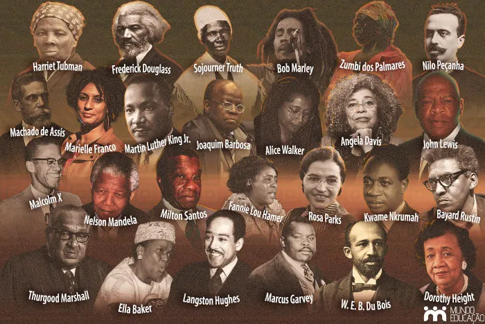
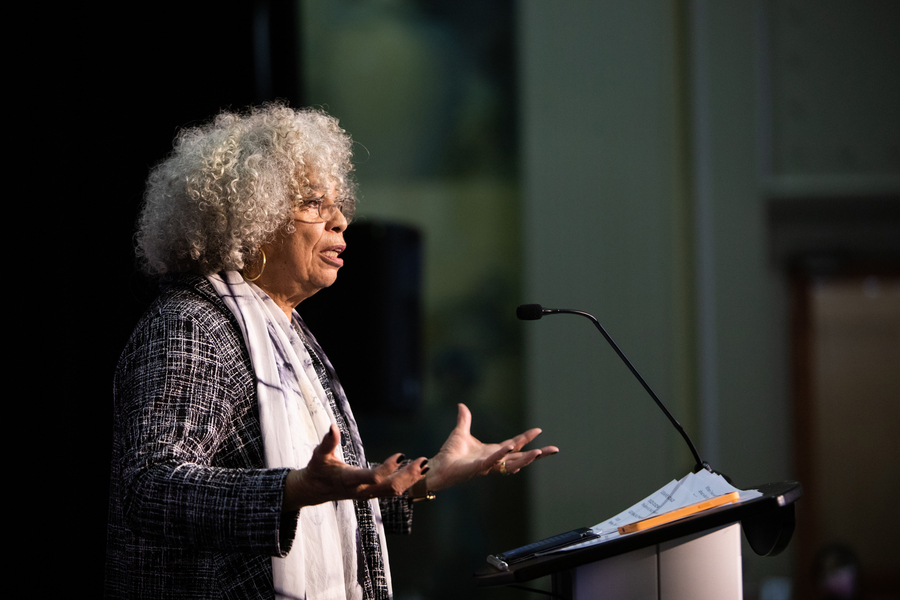
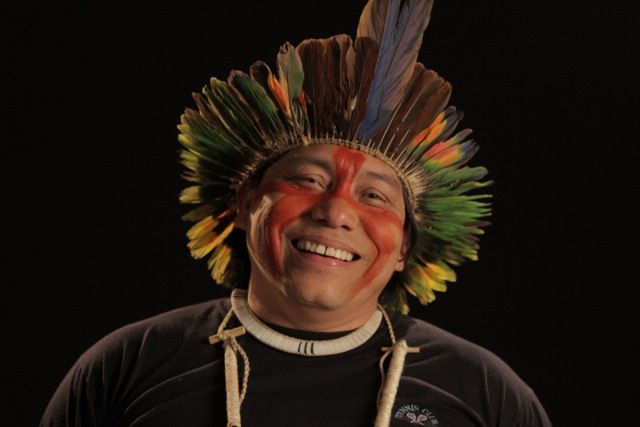
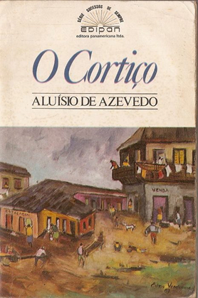
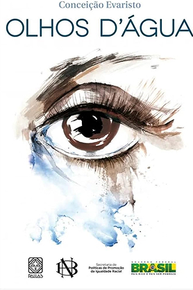
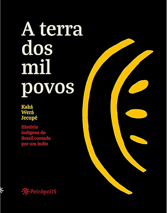

"Quando o homem decidir reformar a sua consciência, o mundo tomará outro roteiro."
— Carolina Maria de Jesus
Algumas figuras importantes:
| Conceição Evaristo | Luis Gama |
| Daniel Munduruku | Nelson Mandela |
| Dandara dos Palmares | Milton Santos |
| Sônia Guajajara | Djamila Ribeiro |

Por que a importância da abordagem desse tema:
A valorização da diversidade cultural e social contribui para a construção de uma sociedade mais justa, consciente e inclusiva. Compreender diferentes histórias, culturas e perspectivas ajuda no combate ao preconceito, fortalece o respeito mútuo e promove uma convivência mais harmoniosa entre todos.


Legislação e Contexto: O que é a ERER?
A Educação para as Relações Étnico-Raciais (ERER) é um compromisso político, pedagógico e social com
a
construção de uma sociedade mais justa e igualitária. Mais do que uma diretriz educacional, ela é
amparada por leis fundamentais que reconfiguraram o currículo escolar brasileiro, garantindo o
direito à
história, à memória e à ancestralidade de povos que foram historicamente invisibilizados.
Lei nº 10.639/03
Promulgada em 2003, esta lei alterou a Lei de Diretrizes e Bases da Educação (LDB) para tornar
obrigatório o ensino sobre História e Cultura Afro-Brasileira nas escolas públicas e particulares de
todo o país.
O grande objetivo dessa legislação é resgatar a imensa contribuição do povo negro nas áreas social,
econômica e política da história do Brasil. Ela propõe uma mudança profunda na educação, combatendo
o
racismo estrutural diretamente a partir das salas de aula e valorizando a identidade
afro-brasileira.
Lei nº 11.645/08
Em 2008, a legislação deu um passo adiante e foi expandida para incluir a obrigatoriedade do estudo
da
história e cultura dos povos indígenas no Brasil.
Esta atualização foi um marco fundamental para reconhecer a pluralidade e a riqueza das nações
originárias. A lei busca desconstruir visões estereotipadas ou romantizadas sobre os indígenas,
integrando suas cosmovisões, suas lutas históricas e seus saberes como pilares centrais da formação
da
identidade nacional.
Por que isso importa no Edu Diversa?
A literatura é uma das ferramentas mais potentes e sensíveis para dar vida a essas leis. Quando
trazemos
obras de autores negros e indígenas para o centro do debate escolar, o projeto Edu Diversa ajuda
educadores a transformarem uma obrigação legal em uma prática pedagógica real, afetuosa, crítica e
verdadeiramente transformadora.
Sobre Nós
O projeto Edu Diversa tem como objetivo promover a valorização da diversidade cultural, étnica e social por meio da educação e do compartilhamento de conhecimento.
Acreditamos que compreender diferentes trajetórias históricas e culturais é essencial para construir uma sociedade mais respeitosa, inclusiva e consciente.
Nosso conteúdo busca destacar personalidades, movimentos e contribuições que ajudam a fortalecer a memória coletiva e a representatividade.
Por meio da informação e do diálogo, incentivamos reflexões que contribuam para a formação de cidadãos comprometidos com a igualdade e o respeito às diferenças.
Importantes Obras Literárias
Quarto de Despejo
Autor: Carolina Maria de Jesus
Um diário real que retrata a vida na favela e denuncia as desigualdades sociais de forma direta e emocionante.
O Cortiço

Aluísio Azevedo
Apesar de escrito no século XIX, traz reflexões sobre desigualdade, luta de classes e relações sociais.
Ponciá Vicêncio
Autor: Conceição Evaristo
Explora identidade, memória e os impactos do racismo na vida de uma mulher negra.
Olhos D'Água

Autor: Conceição Evaristo
Coletânea de contos que aborda vivências negras com sensibilidade e crítica social.
Ideias pra adiar o fim do mundo
Autor: Ailton Krenak
Critica a visão de humanidade separada da natureza e propõe novos caminhos para a convivência sustentável.
A terra de mil povos

Autor: Kaká Werá Jecupé
Uma jornada pela história e espiritualidade indígena brasileira, valorizando a riqueza cultural dos povos originários.
O Karaíba: Uma história Pré-Brasil
Autor: Daniel Munduruku
Romance que imagina a vida, os mitos e os conflitos dos povos indígenas antes da chegada dos europeus.
Veja mais do nosso catálogo:
Sobre nossos máterias didáticos
Os nossos matériais didáticos são focados para estudantes, tanto do ensino fundamental I e II quanto para estudantes do ensino médio e superior, mas isso não significa que eles são somente exclusivos para esse público. Na verdade, nós da Edu Edverse focamos em chegar em várias pessoas, independente de sua faixa etária, sua formação e sua etnia, nos abraçamos a diversidade e trabalhamos com muito carinho para ajudar outras pessoas a entenderem que as diferenças são nossas maiores qualidades. Se você se sentiu curioso ou curiosa para ver mais do nosso trabalho, sinta-se a vontade para conferir nossos máterias.